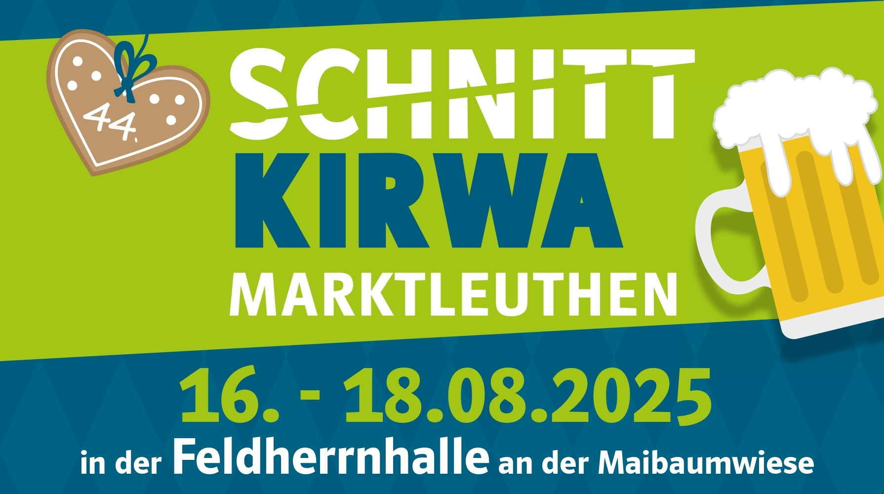
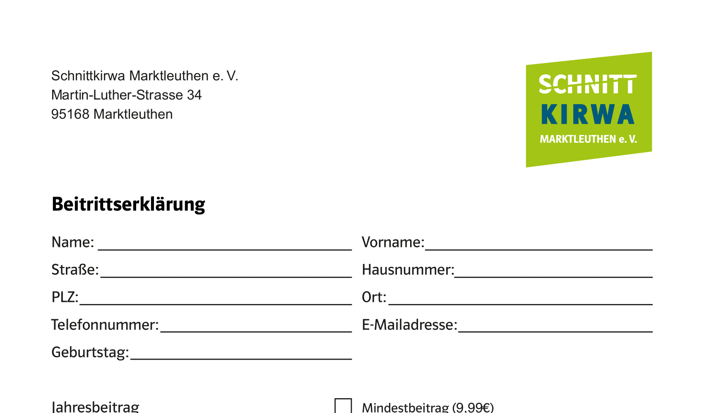
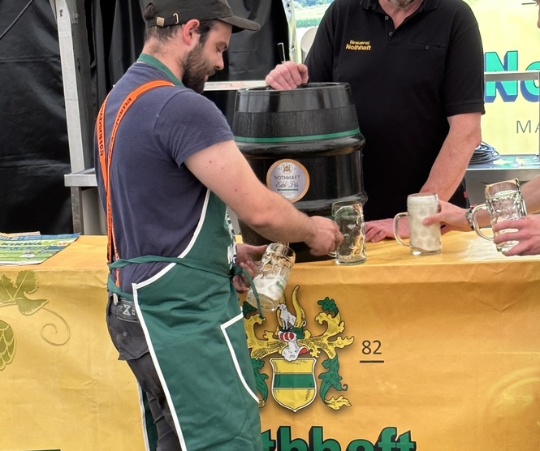

Schnittkirwa 2025
Unsere Schnittkirwa 2025 findet vom 16.08.2025 bis 18.08.2025 statt. Sieh dir hier unser Veranstaltungsplakat an, oder gehe direkt zum Kirwaprogramm
Veranstaltungsplakat herunterladenDie offizielle Website des Vereins auf der wir alle Informationen rund um die Schnittkirwa Marktleuthen bereitstellen
Bilder sagen mehr als tausend Worte – und Taten genauso! Wenn auch DU ein Teil unserer Schnittkirwa werden willst, fülle einfach den Mitgliedsantrag aus und du bist dabei!

Unsere Schnittkirwa 2025 findet vom 16.08.2025 bis 18.08.2025 statt. Sieh dir hier unser Veranstaltungsplakat an, oder gehe direkt zum Kirwaprogramm
Veranstaltungsplakat herunterladen
Egal ob Organisationstalent, Anpacker beim Auf- & Abbau, Biertaxi mit Trinkgeld-Affinität, Held des Zapfhahns oder Bratwurst-Sommelier – jeder ist im {{ site.name }} willkommen! Einfach Antrag herunterladen, ausfüllen und uns zukommen lassen, schon bist du ein Teil des legendären Kirwa-Teams!
Mitgliedsantrag herunterladen
Ein paar Eindrücke unserer vergangenen Feste, mit exklusiven Einblicken hinter die Kulissen! Denn Schnittkirwa macht nicht nur als Gast, sondern auch als aktiver Helfer Spaß – einfach mal reinschauen und inspirieren lassen ;)
Bilder ansehen (kommt bald)